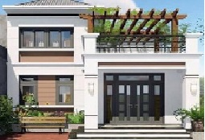
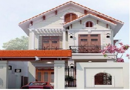
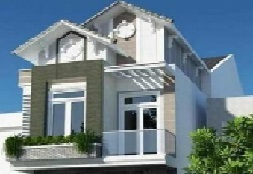

Mẫu 1
Mẫu nhà 2 tầng 4 phòng ngủ thiết kế với điện 7x14m, mang phong cách biệt thự mini phù hợp với các gia đình ở nông thôn. Nhà hai tầng mái thái phong cách hiện đại

Mẫu nhà 2 tầng 4 phòng ngủ thiết kế với điện 7x14m, mang phong cách biệt thự mini phù hợp với các gia đình ở nông thôn. Nhà hai tầng mái thái phong cách hiện đại

Nhà mái ba phòng rất thích hợp cho việc thiết kế theo kiến trúc biệt thự nhà vườn, đặc biệt là những gia đình có từ 2 đến 3 thế hệ khoảng từ 4 đến 6 thành viên

Với nhiều tính năng vượt trội, thiết kế nhà hai tầng 1 tum mái nhỏ đặc biệt phù hợp với điện tích nhỏ, Ảnh:Internet. Nếu không thích các mẫu nhà quen thuộc, gia chủ có thể thiết kế nhà chữ L có gác lửng